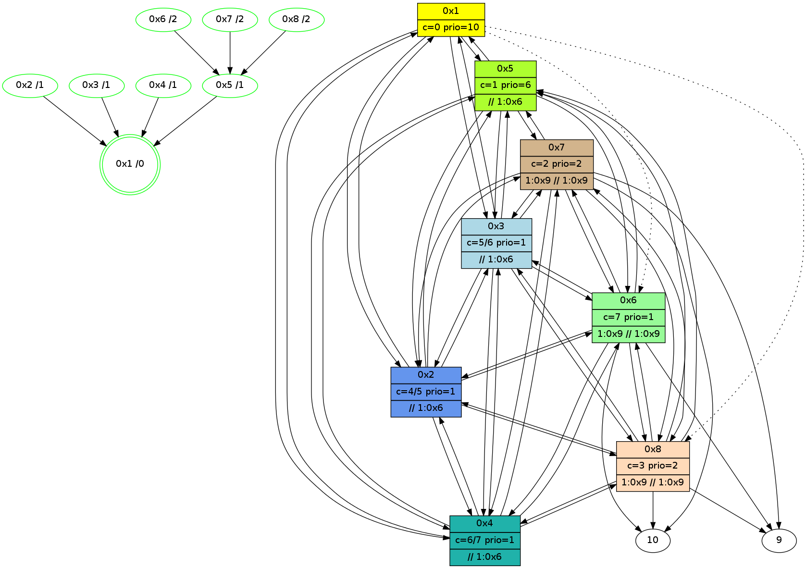

>> << IDX [start] -100 -25 -5 +0 +5 +25 +100 [415.47090888]
 Previous packets
410.004087 beacon06(11f6) #0 coord=01,02,03,04,05,06,07,08,0a,09 cycle=688.0ms assoc 64 44 c7
410.014087 beacon07(11f6) #0 coord=01,02,03,04,05,06,07,08,0a,09 cycle=688.0ms assoc 64 3e 8a
410.024090 beacon08(11f6) #0 coord=01,02,03,04,05,06,07,08,0a,09 cycle=688.0ms assoc 64 bb 1b
410.065048 [Hello(6): seq=207 sym=10,7,5,3,8,4,2,9 sysInfo=hasWarning,coloring-mode-on,ColoringModeIndicationCalled stat=10:1,7,14,7/7:12,8,4,10/5:7,8,5,2/3:9,9,4,13/8:3,10,2,3/4:13,9,1,12/2:6,8,2,11/9:6,8,4,3]
410.092973 [Hello(5): seq=207 sym=1,2,7,6,3,8,4 sysInfo=hasWarning,coloring-mode-on,ColoringModeIndicationCalled stat=1:15,9,6,0/2:3,10,4,13/7:5,7,4,10/6:0,10,3,12/3:6,9,5,12/8:1,8,0,2/4:5,10,3,12]
410.135321 [Hello(7): seq=207 sym=10,5,6,8,3,2,4,9 sysInfo=coloring-mode-on,ColoringModeIndicationCalled stat=10:3,7,0,8/5:11,9,5,2/6:10,10,3,12/8:5,10,3,3/3:9,8,4,12/2:5,8,2,11/4:7,9,15,10/9:2,10,4,3]
410.140695 [Hello(2): seq=207 sym=1,7,5,3,8,4,6 sysInfo=hasWarning,coloring-mode-on,ColoringModeIndicationCalled stat=1:14,10,6,0/7:2,7,4,10/5:3,10,5,2/3:2,9,3,11/8:0,9,0,2/4:3,8,4,13/6:8,10,3,12]
410.145744 [Hello(4): seq=207 sym=1,2,5,6,3,8,7 sysInfo=coloring-mode-on,ColoringModeIndicationCalled stat=1:14,9,7,0/2:5,10,5,13/5:8,9,6,2/6:14,10,4,12/3:8,9,3,11/8:1,9,15,2/7:8,7,4,10]
410.189388 [Hello(3): seq=207 sym=1,2,7,5,6,8,4 sysInfo=hasWarning,coloring-mode-on,ColoringModeIndicationCalled stat=1:15,10,6,0/2:4,9,3,14/7:3,7,4,9/5:1,10,3,2/6:13,10,4,12/8:0,9,0,2/4:8,9,5,13]
410.197072 [Hello(8): seq=207 sym=2,7,5,6,3,4,10,9 sysInfo=coloring-mode-on,ColoringModeIndicationCalled stat=2:15,8,3,13/7:13,8,4,10/5:10,9,4,2/6:10,9,2,11/3:6,8,3,12/4:4,9,2,12/10:6,8,14,7/9:11,8,13,2]
----------------------------------------------------------------------
410.742087 beacon01(11f6) #0 coord=01,02,03,04,05,06,07,08,0a,09 cycle=688.0ms assoc
-- color-indic=1 64 92 ce
410.752256 beacon02(11f6) #0 coord=01,02,03,04,05,06,07,08,0a,09 cycle=688.0ms assoc 64 01 ff
410.762223 beacon03(11f6) #0 coord=01,02,03,04,05,06,07,08,0a,09 cycle=688.0ms assoc 64 7b b2
410.772222 beacon04(11f6) #0 coord=01,02,03,04,05,06,07,08,0a,09 cycle=688.0ms assoc 64 0c 58
410.782223 beacon05(11f6) #0 coord=01,02,03,04,05,06,07,08,0a,09 cycle=688.0ms assoc 64 76 15
410.792223 beacon06(11f6) #0 coord=01,02,03,04,05,06,07,08,0a,09 cycle=688.0ms assoc 64 f8 c2
410.802224 beacon07(11f6) #0 coord=01,02,03,04,05,06,07,08,0a,09 cycle=688.0ms assoc 64 82 8f
410.812228 beacon08(11f6) #0 coord=01,02,03,04,05,06,07,08,0a,09 cycle=688.0ms assoc 64 07 1e
410.877679 [Color(4) seq=10 @0:0 prio=1 >1.@3,1.@6 >>1.@3,1.@4,1.@6 c=0,1,2,3,4]
410.883536 [Color(3) seq=10 @0:0 color=5 prio=1 >1.@4,1.@6 >>1.@4,1.@6,1.@9 c=0,1,2,3,4]
410.906955 [Color(5) seq=10 @0:0 color=1 prio=6 >1.@4,1.@6 >>1.@4,1.@6,1.@9 c=0,2,3,4,5]
410.924796 [Hello(1): seq=208 sym=5,3,2,4 asym=8,6 sysInfo=hasWarning,coloring-mode-on,ColoringModeRequestCalled stat=5:4,10,6,2/3:9,10,5,13/2:4,9,4,14/4:8,11,5,14/8:5,9,0,2/6:3,10,3,12]
410.928266 [Color(1) seq=10 @0:0 color=0 prio=10 >1.@4 >>1.@4,1.@6 c=1,4,5;2,3]
410.931692 [Color(6) seq=10 @0:0 prio=1 >1.@4,1.@9,1.@a >>1.@4,1.@6,1.@9 c=1,2,3,4,5;0]
410.946598 [Color(2) seq=10 @0:0 color=4 prio=1 >1.@4,1.@6 >>1.@4,1.@6,1.@9 c=0,1,2,3,5]
410.973309 [Color(8) seq=10 @0:0 color=3 prio=2 >1.@4,1.@6,1.@9,1.@a >>1.@4,1.@6,1.@9 c=1,2,4,5;0]
410.990799 [Color(7) seq=10 @0:0 color=2 prio=2 >1.@4,1.@6,1.@9,1.@a >>1.@4,1.@6,1.@9 c=1,3,4,5;0]
----------------------------------------------------------------------
411.530223 beacon01(11f6) #0 coord=01,02,03,04,05,06,07,08,0a,09 cycle=688.0ms assoc
-- color-indic=1 64 56 c0
411.540374 beacon02(11f6) #0 coord=01,02,03,04,05,06,07,08,0a,09 cycle=688.0ms assoc 64 c5 f1
411.550359 beacon03(11f6) #0 coord=01,02,03,04,05,06,07,08,0a,09 cycle=688.0ms assoc 64 bf bc
411.560358 beacon04(11f6) #0 coord=01,02,03,04,05,06,07,08,0a,09 cycle=688.0ms assoc 64 c8 56
411.570359 beacon05(11f6) #0 coord=01,02,03,04,05,06,07,08,0a,09 cycle=688.0ms assoc 64 b2 1b
411.580360 beacon06(11f6) #0 coord=01,02,03,04,05,06,07,08,0a,09 cycle=688.0ms assoc 64 3c cc
411.590360 beacon07(11f6) #0 coord=01,02,03,04,05,06,07,08,0a,09 cycle=688.0ms assoc 64 46 81
411.600364 beacon08(11f6) #0 coord=01,02,03,04,05,06,07,08,0a,09 cycle=688.0ms assoc 64 c3 10
411.657196 [Hello(5): seq=208 sym=1,2,7,6,3,8,4 sysInfo=hasWarning,coloring-mode-on,ColoringModeIndicationCalled stat=1:0,10,6,0/2:4,11,4,13/7:6,8,4,10/6:0,11,3,12/3:7,10,5,12/8:2,9,0,2/4:6,11,3,12]
411.669597 [Hello(3): seq=208 sym=1,2,7,5,6,8,4 sysInfo=hasWarning,coloring-mode-on,ColoringModeIndicationCalled stat=1:0,11,6,0/2:4,10,3,14/7:3,8,4,9/5:1,11,3,2/6:13,11,4,12/8:1,10,0,2/4:8,10,5,13]
411.678918 [Hello(2): seq=208 sym=1,7,5,3,8,4,6 sysInfo=hasWarning,coloring-mode-on,ColoringModeIndicationCalled stat=1:15,11,6,0/7:2,8,4,10/5:3,11,5,2/3:3,10,3,11/8:1,10,0,2/4:4,9,4,13/6:8,11,3,12]
411.686261 [Hello(4): seq=208 sym=1,2,5,6,3,8,7 sysInfo=coloring-mode-on,ColoringModeIndicationCalled stat=1:15,10,7,0/2:6,11,5,13/5:9,10,6,2/6:14,11,4,12/3:9,10,3,11/8:2,10,15,2/7:8,8,4,10]
411.725588 [STC(1) #0.24 new-neigh,stable,to-color d=0]
411.734335 [Hello(8): seq=208 sym=2,7,5,6,3,4,10,9 sysInfo=coloring-mode-on,ColoringModeIndicationCalled stat=2:0,9,3,13/7:14,9,4,10/5:10,10,4,2/6:10,10,2,11/3:6,9,3,12/4:5,10,2,12/10:7,8,14,7/9:12,9,13,2]
411.773333 [Hello(6): seq=208 sym=10,7,5,3,8,4,2,9 sysInfo=hasWarning,coloring-mode-on,ColoringModeIndicationCalled stat=10:3,8,14,7/7:14,9,4,10/5:8,9,5,2/3:10,10,4,13/8:5,11,2,3/4:15,10,1,12/2:8,9,2,11/9:8,9,4,3]
----------------------------------------------------------------------
412.318359 beacon01(11f6) #0 coord=01,02,03,04,05,06,07,08,0a,09 cycle=688.0ms assoc
-- color-indic=1 64 ea c5
412.328507 beacon02(11f6) #0 coord=01,02,03,04,05,06,07,08,0a,09 cycle=688.0ms assoc 64 79 f4
412.338495 beacon03(11f6) #0 coord=01,02,03,04,05,06,07,08,0a,09 cycle=688.0ms assoc 64 03 b9
412.348494 beacon04(11f6) #0 coord=01,02,03,04,05,06,07,08,0a,09 cycle=688.0ms assoc 64 74 53
412.358495 beacon05(11f6) #0 coord=01,02,03,04,05,06,07,08,0a,09 cycle=688.0ms assoc 64 0e 1e
412.368496 beacon06(11f6) #0 coord=01,02,03,04,05,06,07,08,0a,09 cycle=688.0ms assoc 64 80 c9
412.378495 beacon07(11f6) #0 coord=01,02,03,04,05,06,07,08,0a,09 cycle=688.0ms assoc 64 fa 84
412.388499 beacon08(11f6) #0 coord=01,02,03,04,05,06,07,08,0a,09 cycle=688.0ms assoc 64 7f 15
412.453981 [STC(4)->1 #0.24 new-neigh,stable,to-color d=1]
412.456598 [Color(4) seq=11 @0:0 color=6 prio=1 >1.@6 >>1.@6,1.@9,1.@a c=0,1,2,3,4,5]
412.459759 [Color(7) seq=11 @0:0 color=2 prio=2 >1.@4,1.@6,1.@9,1.@a >>1.@4,1.@6,1.@9 c=1,3,4,5;0]
412.467313 [Hello(1): seq=209 sym=5,3,2,4 asym=8,6 sysInfo=hasWarning,coloring-mode-on,ColoringModeRequestCalled stat=5:4,10,6,2/3:9,10,5,13/2:5,10,4,14/4:9,12,6,14/8:6,10,0,2/6:4,11,3,12]
412.470443 [Color(1) seq=11 @0:0 color=0 prio=10 >>1.@6 c=1,4,5,6;2,3]
412.474868 [STC(3)->1 #0.24 new-neigh,stable,to-color d=1]
412.478132 [Color(3) seq=11 @0:0 color=5 prio=1 >1.@6 >>1.@6,1.@9,1.@a c=0,1,2,3,4,6]
412.489521 [Color(6) seq=11 @0:0 color=7 prio=1 >1.@9,1.@a >>1.@6,1.@9,1.@a c=1,2,3,4,5,6;0]
412.512594 [STC(2)->1 #0.24 new-neigh,stable,to-color d=1]
412.516491 [Color(2) seq=11 @0:0 color=4/5 prio=1 >>1.@6,1.@9,1.@a c=0,1,2,3,5,6,7]
412.548181 [Color(8) seq=11 @0:0 color=3 prio=2 >1.@9,1.@a >>1.@6,1.@9,1.@a c=1,2,4,5,6,7;0]
412.555545 [STC(5)->1 #0.24 new-neigh,stable,to-color d=1]
412.557827 [Color(5) seq=11 @0:0 color=1 prio=6 >>1.@6,1.@9,1.@a c=0,2,3,4,5,6,7]
----------------------------------------------------------------------
413.106496 beacon01(11f6) #0 coord=01,02,03,04,05,06,07,08,0a,09 cycle=688.0ms assoc
-- color-indic=1 64 de dd
413.116659 beacon02(11f6) #0 coord=01,02,03,04,05,06,07,08,0a,09 cycle=688.0ms assoc 64 4d ec
413.126631 beacon03(11f6) #0 coord=01,02,03,04,05,06,07,08,0a,09 cycle=688.0ms assoc 64 37 a1
413.136633 beacon04(11f6) #0 coord=01,02,03,04,05,06,07,08,0a,09 cycle=688.0ms assoc 64 40 4b
413.146633 beacon05(11f6) #0 coord=01,02,03,04,05,06,07,08,0a,09 cycle=688.0ms assoc 64 3a 06
413.156632 beacon06(11f6) #0 coord=01,02,03,04,05,06,07,08,0a,09 cycle=688.0ms assoc 64 b4 d1
413.166633 beacon07(11f6) #0 coord=01,02,03,04,05,06,07,08,0a,09 cycle=688.0ms assoc 64 ce 9c
413.220886 [Hello(3): seq=209 sym=1,2,7,5,6,8,4 sysInfo=hasWarning,coloring-mode-on,ColoringModeIndicationCalled stat=1:1,12,7,0/2:5,11,4,14/7:3,9,4,9/5:1,12,4,2/6:14,12,4,12/8:2,11,0,2/4:9,11,6,13]
413.239541 [Hello(4): seq=209 sym=1,2,5,6,3,8,7 mpr= sysInfo=coloring-mode-on,ColoringModeIndicationCalled stat=1:0,11,8,0/2:6,12,6,13/5:9,11,7,2/6:15,12,4,12/3:10,11,4,11/8:3,11,15,2/7:8,9,4,10]
413.257540 [Hello(2): seq=209 sym=1,7,5,3,8,4,6 sysInfo=hasWarning,coloring-mode-on,ColoringModeIndicationCalled stat=1:0,12,7,0/7:2,9,4,10/5:3,12,6,2/3:4,11,4,11/8:2,11,0,2/4:6,10,5,13/6:9,12,3,12]
413.266793 [Hello(6): seq=209 sym=10,7,5,3,8,4,2,9 sysInfo=hasWarning,coloring-mode-on,ColoringModeIndicationCalled stat=10:3,8,14,7/7:14,10,4,10/5:8,10,6,2/3:11,11,5,13/8:5,12,2,3/4:0,11,2,12/2:9,10,3,11/9:8,10,4,3]
413.270144 [STC(6)->5-.->1 #0.24 new-neigh,stable,to-color d=2]
413.273829 [Hello(5): seq=209 sym=1,2,7,6,3,8,4 sysInfo=hasWarning,coloring-mode-on,ColoringModeIndicationCalled stat=1:1,11,7,0/2:6,12,5,13/7:6,9,4,10/6:2,12,3,12/3:8,11,6,12/8:3,10,0,2/4:8,12,4,12]
413.290176 [Hello(7): seq=209 sym=10,5,6,8,3,2,4,9 sysInfo=coloring-mode-on,ColoringModeIndicationCalled stat=10:5,8,0,8/5:12,11,6,2/6:12,12,4,12/8:7,12,3,3/3:10,10,5,12/2:8,10,3,11/4:10,11,0,10/9:3,12,4,3]
413.294473 [STC(7)->5-.->1 #0.24 new-neigh,stable,to-color d=2]
413.345462 [Hello(8): seq=209 sym=2,7,5,6,3,4,10,9 sysInfo=coloring-mode-on,ColoringModeIndicationCalled stat=2:1,10,4,13/7:15,10,5,10/5:11,11,5,2/6:12,11,3,11/3:7,10,4,12/4:6,11,3,12/10:7,8,14,7/9:12,10,13,2]
413.349425 [STC(8)->5-.->1 #0.24 new-neigh,stable,to-color d=2]
----------------------------------------------------------------------
413.894633 beacon01(11f6) #0 coord=01,02,03,04,05,06,07,08,0a,09 cycle=688.0ms assoc
-- color-indic=1 64 62 d8
413.904789 beacon02(11f6) #0 coord=01,02,03,04,05,06,07,08,0a,09 cycle=688.0ms assoc 64 f1 e9
413.914768 beacon03(11f6) #0 coord=01,02,03,04,05,06,07,08,0a,09 cycle=688.0ms assoc 64 8b a4
413.924768 beacon04(11f6) #0 coord=01,02,03,04,05,06,07,08,0a,09 cycle=688.0ms assoc 64 fc 4e
413.934769 beacon05(11f6) #0 coord=01,02,03,04,05,06,07,08,0a,09 cycle=688.0ms assoc 64 86 03
413.944769 beacon06(11f6) #0 coord=01,02,03,04,05,06,07,08,0a,09 cycle=688.0ms assoc 64 08 d4
413.954769 beacon07(11f6) #0 coord=01,02,03,04,05,06,07,08,0a,09 cycle=688.0ms assoc 64 72 99
413.964774 beacon08(11f6) #0 coord=01,02,03,04,05,06,07,08,0a,09 cycle=688.0ms assoc 64 f7 08
414.002642 [Color(2) seq=12 @0:0 color=4/5 prio=1 >>1.@6,1.@9,1.@a c=0,1,2,3,5,6,7]
414.041210 [Color(5) seq=12 @0:0 color=1 prio=6 >>1.@6,1.@9,1.@a c=0,2,3,4,5,6,7]
414.045736 [Color(4) seq=12 @0:0 color=6/7 prio=1 >>1.@6,1.@9,1.@a c=0,1,2,3,4,5,7]
414.054569 [Color(7) seq=12 @0:0 color=2 prio=2 >1.@9,1.@a >>1.@9,1.@a c=1,3,4,5,6,7;0]
414.057131 [Color(3) seq=12 @0:0 color=5/6 prio=1 >>1.@6,1.@9,1.@a c=0,1,2,3,4,6,7]
414.060750 [Hello(1): seq=210 sym=5,3,2,4 asym=8,6 sysInfo=hasWarning,coloring-mode-on,ColoringModeRequestCalled stat=5:5,12,7,2/3:10,11,6,13/2:6,12,5,14/4:10,13,6,14/8:7,11,1,2/6:5,12,4,12]
414.065484 [Color(1) seq=12 @0:0 color=0 prio=10 c=1,4,5,6;2,3,7]
414.078336 [Color(6) seq=12 @0:0 color=7 prio=1 >1.@9,1.@a >>1.@9,1.@a c=1,2,3,4,5,6;0]
414.119587 [Color(8) seq=12 @0:0 color=3 prio=2 >1.@9,1.@a >>1.@9,1.@a c=1,2,4,5,6,7;0]
----------------------------------------------------------------------
414.682771 beacon01(11f6) #0 coord=01,02,03,04,05,06,07,08,0a,09 cycle=688.0ms assoc
-- color-indic=1 64 a6 d6
414.692927 beacon02(11f6) #0 coord=01,02,03,04,05,06,07,08,0a,09 cycle=688.0ms assoc 64 35 e7
414.702905 beacon03(11f6) #0 coord=01,02,03,04,05,06,07,08,0a,09 cycle=688.0ms assoc 64 4f aa
414.712907 beacon04(11f6) #0 coord=01,02,03,04,05,06,07,08,0a,09 cycle=688.0ms assoc 64 38 40
414.722906 beacon05(11f6) #0 coord=01,02,03,04,05,06,07,08,0a,09 cycle=688.0ms assoc 64 42 0d
414.732907 beacon06(11f6) #0 coord=01,02,03,04,05,06,07,08,0a,09 cycle=688.0ms assoc 64 cc da
414.742908 beacon07(11f6) #0 coord=01,02,03,04,05,06,07,08,0a,09 cycle=688.0ms assoc 64 b6 97
414.752911 beacon08(11f6) #0 coord=01,02,03,04,05,06,07,08,0a,09 cycle=688.0ms assoc 64 33 06
414.805538 [Hello(3): seq=210 sym=1,2,7,5,6,8,4 sysInfo=hasWarning,coloring-mode-on,ColoringModeIndicationCalled stat=1:2,13,7,0/2:6,12,4,14/7:4,10,5,9/5:2,13,4,2/6:15,13,5,12/8:3,12,1,2/4:10,12,6,13]
414.815814 [Hello(2): seq=210 sym=1,7,5,3,8,4,6 sysInfo=hasWarning,coloring-mode-on,ColoringModeIndicationCalled stat=1:1,13,7,0/7:3,10,5,10/5:4,13,6,2/3:5,12,4,11/8:3,12,1,2/4:6,11,5,13/6:10,13,4,12]
414.841765 [Hello(7): seq=210 sym=10,5,6,8,3,2,4,9 sysInfo=coloring-mode-on,ColoringModeIndicationCalled stat=10:7,8,1,8/5:12,12,6,2/6:12,13,4,12/8:8,13,4,3/3:10,11,5,12/2:9,11,3,11/4:10,11,0,10/9:3,12,5,3]
414.853884 [Hello(8): seq=210 sym=2,7,5,6,3,4,10,9 sysInfo=coloring-mode-on,ColoringModeIndicationCalled stat=2:2,11,4,13/7:0,11,5,10/5:11,12,5,2/6:12,12,3,11/3:8,11,4,12/4:6,12,3,12/10:8,8,15,7/9:12,10,14,2]
414.858166 [Hello(6): seq=210 sym=10,7,5,3,8,4,2,9 sysInfo=hasWarning,coloring-mode-on,ColoringModeIndicationCalled stat=10:5,8,15,7/7:0,11,5,10/5:9,11,6,2/3:12,12,5,13/8:6,13,3,3/4:0,12,2,12/2:10,11,3,11/9:8,10,5,3]
414.864472 [Hello(5): seq=210 sym=1,2,7,6,3,8,4 sysInfo=hasWarning,coloring-mode-on,ColoringModeIndicationCalled stat=1:2,12,7,0/2:7,13,5,13/7:8,10,5,10/6:3,13,4,12/3:9,12,6,12/8:5,11,1,2/4:8,13,4,12]
414.878188 [Hello(4): seq=210 sym=1,2,5,6,3,8,7 sysInfo=coloring-mode-on,ColoringModeIndicationCalled stat=1:1,12,8,0/2:8,13,6,13/5:11,11,7,2/6:1,13,5,12/3:11,12,4,11/8:5,12,0,2/7:10,10,5,10]